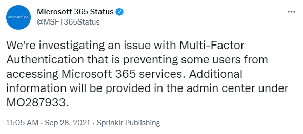
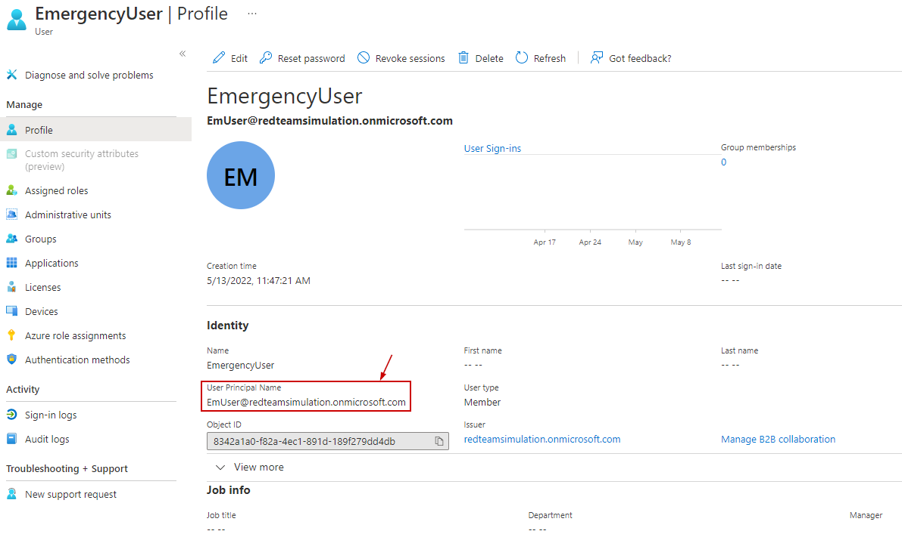
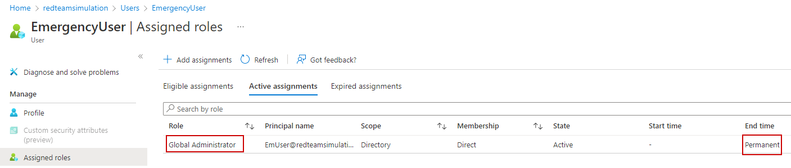

Create Emergency User
We protect our users by enforcing Azure MFA.
However, Azure MFA has gone down before and we dont want administrators to be locked out of tennat to troubleshoot if this happens again.

Therefore, we create a cloud-only "emergency" account. This account will be assigned a Global Admin role and wont have the MFA enforced on it. This account should be used ONLY when Azure MFA service is down.
Given high privileges on this account, any attempt of usage this emergency login should generate a high alert for Security Opertion Center to validate the legit use.
The PowerShell script :
$TenantDetails = $NULL
$CurrentlyLoggedInUser = $NULL
$OnMicrosoftDomain = $NULL
$connection = $NULL
try {
$AzureADSession = Get-AzureADCurrentSessionInfo
$CurrentlyLoggedInUser = $AzureADSession.Account | select -ExpandProperty Id
Write-Host "Already connected to : $AzureADSession.TenantDomain as $CurrentlyLoggedInUser"
}
catch [Microsoft.Open.Azure.AD.CommonLibrary.AadNeedAuthenticationException] {
Write-Host "You're not connected to AzureAD. Connecting now...";
$connection = Connect-AzureAD
$AzureADSession = Get-AzureADCurrentSessionInfo
$CurrentlyLoggedInUser = $AzureADSession.Account | select -ExpandProperty Id
Write-Host "Connected to : $AzureADSession.TenantDomain as $CurrentlyLoggedInUser"
}
$CurrentlyLoggedInUser
$CurrentUserId = Get-AzureADUser -Filter "UserPrincipalName eq '$CurrentlyLoggedInUser'" | select -ExpandProperty ObjectId
$EmergencyUserUPNPrefix = "EmUser"
$UserDisplayName = "EmergencyUser"
$TenantDomain = $Connection.TenantDomain
$OnMicrosoftDomain = $CurrentlyLoggedInUser.substring($CurrentlyLoggedInUser.IndexOf('@'))
$OnMicrosoftDomain
$UserPrincipalName = $EmergencyUserUPNPrefix+$OnMicrosoftDomain
$EmUser = $NULL
try{
$EmUser = Get-AzureADUser -ObjectId $UserPrincipalName -ErrorAction silentlycontinue
write-output("Emergency user " + $UserPrincipalName + ' already exists.')
}catch{
write-output("Emergency user " + $UserPrincipalName + ' does not exist. Creating now..')
Add-Type -AssemblyName System.Web
$UserPassword = [System.Web.Security.Membership]::GeneratePassword(32,2)
$PasswordProfile = New-Object -TypeName Microsoft.Open.AzureAD.Model.PasswordProfile
$PasswordProfile.Password = $UserPassword
$UserPassword
$NewUser = New-AzureADUser -DisplayName $UserDisplayName -PasswordProfile $PasswordProfile -AccountEnabled $true -UserPrincipalName $UserPrincipalName -MailNickName "EmUser"
# Adding the new user to Global Admin role
Write-output "Adding the new user to Global Admin r+ole"
$GlobalAdminRole = Get-AzureADDirectoryRole | Where-Object { $_.displayName -eq "Global Administrator"}
Add-AzureADDirectoryRoleMember -ObjectId $GlobalAdminRole.ObjectId -RefObjectId $NewUser.ObjectId
# Saving the details for the app
$temp_location = (get-location).Drive.Root+"office365_temp\"
$temp_file = $temp_location + $CurrentTimestamp+".txt"
New-Item $temp_location -ItemType Directory -Force | Out-Null
New-Item $temp_file -ItemType File -Force | Out-Null
Add-Content $temp_file ("Tenant Domain: " + $AzureADSession.TenantDomain)
Add-Content $temp_file ("Tenant Id: " + $AzureADSession.TenantId)
Add-Content $temp_file ("Username: " + $UserPrincipalName)
Add-Content $temp_file ("Password: " + $UserPassword)
.\notepad.exe $temp_file
write-output("User details written to the file\r\n")
}
The emergency user is created.

The emergency user is assigned the Global Administrator role on permanent basis.
